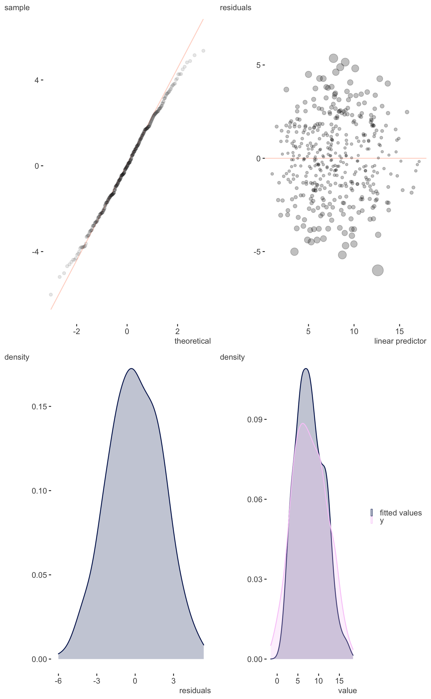
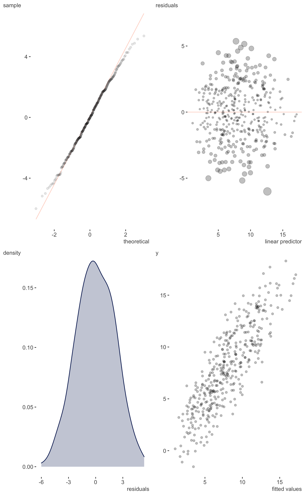

Residual plots etc.
plot_gam_check(model, single_page = TRUE, type = "deviance", scatter = FALSE, kcheck = FALSE)
| model | The mgcv gam model |
|---|---|
| single_page | Plot all on a single page. Requires grid.arrange |
| type | The type of residuals wanted. Usually one of "deviance", "pearson","scaled.pearson", "working", or "response"., See residuals.gam. |
| scatter | Whether to plot fitted vs. observed target variable as scatter plot or density. Default is FALSE (density). |
| kcheck | If you want the slightly less verbose basis dimension (k) checking results. Default is FALSE. When true, only uses the defaults of gam.check. If you need to do more, use mgcv. |
A ggplot that provides visual inspection of residuals and more.
Just a single page version of gam.check.
Other model visualization: plot_coefficients.brmsfit,
plot_coefficients.lm,
plot_coefficients.merMod,
plot_coefficients,
plot_gam_2d, plot_gam_3d,
plot_gam
#> Gu & Wahba 4 term additive modelplot_gam_check(g_fit, scatter=TRUE)